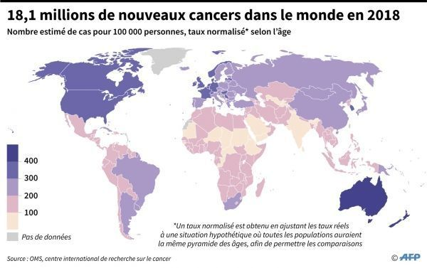

Le cancer est une maladie qui affecte des millions de personnes dans le monde entier. Selon l'Organisation mondiale de la santé (OMS), il y a environ 18,1 millions de nouveaux cas de cancer diagnostiqués chaque année et 9,6 millions de décès dus à cette maladie. Les différents types de cancer peuvent se développer dans presque tous les organes du corps, mais les plus courants sont le cancer du poumon, du sein, de la prostate, du colon-rectum et du foie. Les symptômes du cancer varient en fonction de la localisation et de la progression de la maladie. Certains symptômes courants incluent des douleurs, des gonflements, des saignements, des pertes de poids et de l'essoufflement. Il est important de noter que ces symptômes peuvent également être causés par d'autres maladies, il est donc important de consulter un médecin pour un diagnostic précis.
Au fil des ans, l'incidence du cancer a augmenté en raison de l'augmentation de l'âge moyen de la population et des facteurs de risque tels que le tabagisme, l'alcoolisme, l'obésité et une alimentation déséquilibrée. Cependant, grâce aux avancées de la recherche médicale et de la technologie, il y a eu une augmentation de la survie des patients atteints de cancer. Il est important de noter que la prévention et le dépistage précoce sont des moyens importants de réduire les taux de mortalité liés au cancer. Les mesures préventives incluent l'arrêt du tabagisme, la réduction de l'alcoolisme, une alimentation équilibrée et l'exercice régulier. Les programmes de dépistage peuvent aider à détecter le cancer à un stade précoce, ce qui augmente les chances de guérison.
En résumé, le cancer est une maladie qui affecte des millions de personnes dans le monde entier. Les symptômes peuvent varier en fonction de la localisation et de la progression de la maladie, mais il est important de consulter un médecin pour un diagnostic précis. La prévention et le dépistage précoce sont des moyens importants de réduire les taux de mortalité liés au cancer.